SSTR - Friction Reduction
Captures desktop
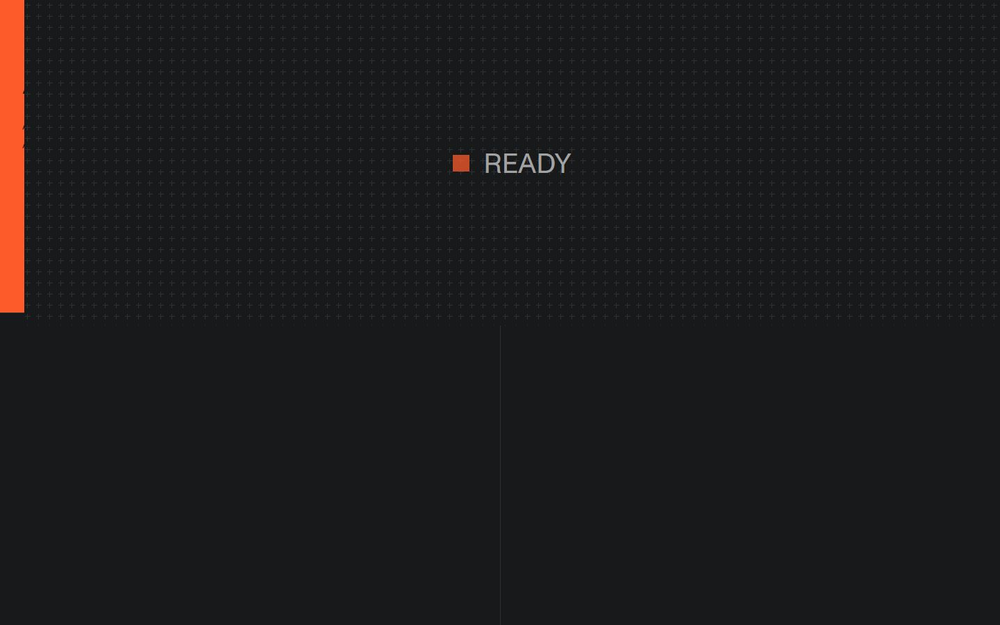

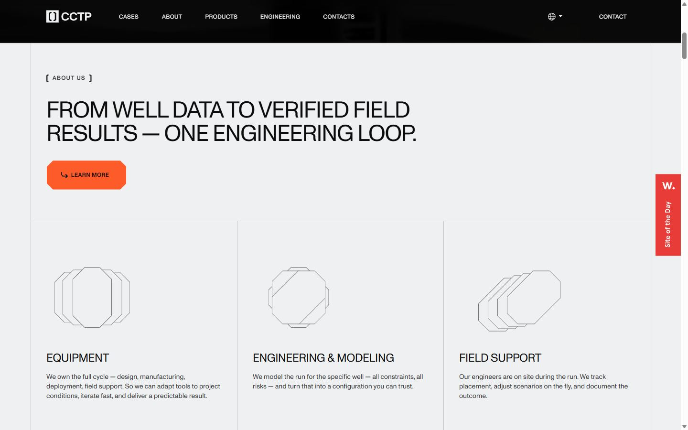
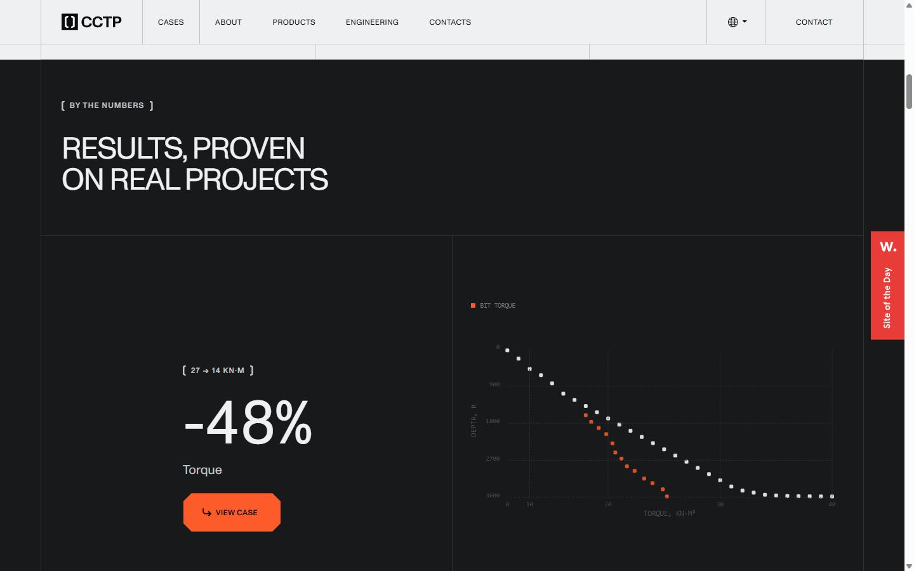
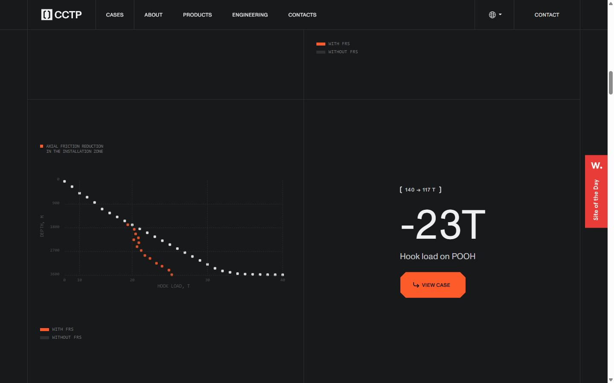
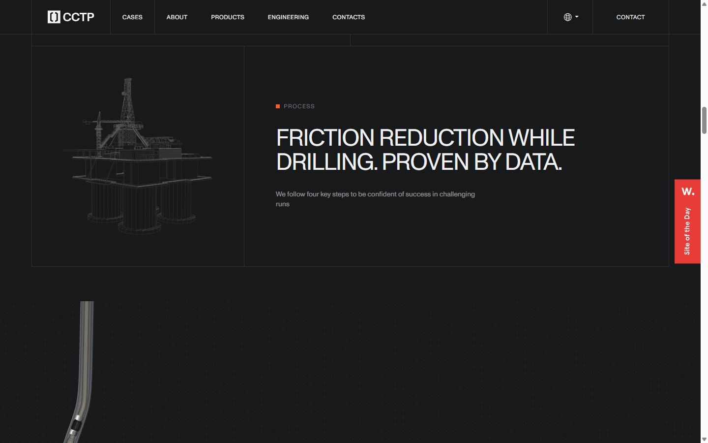
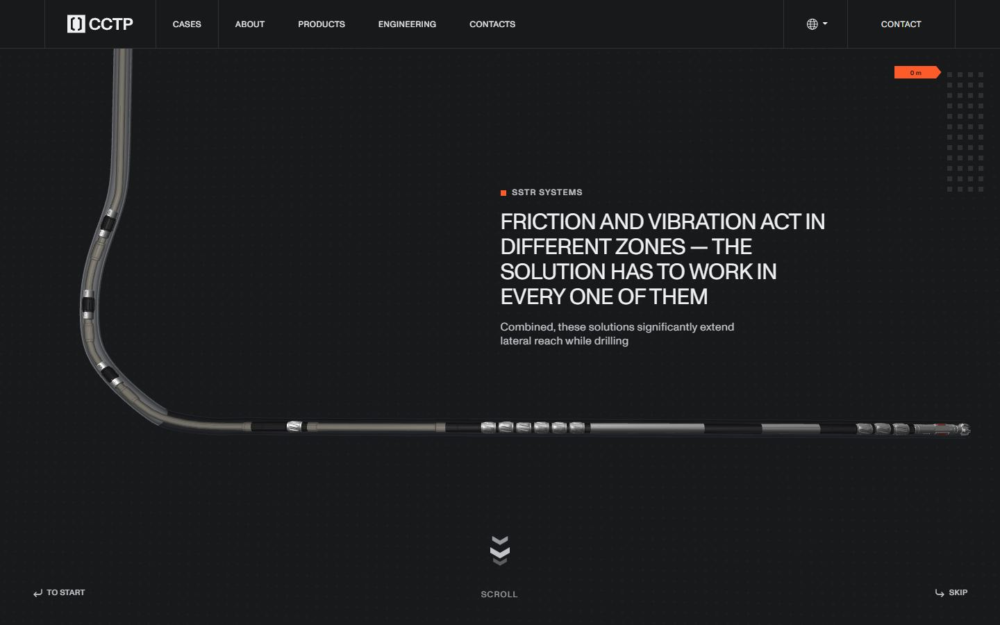
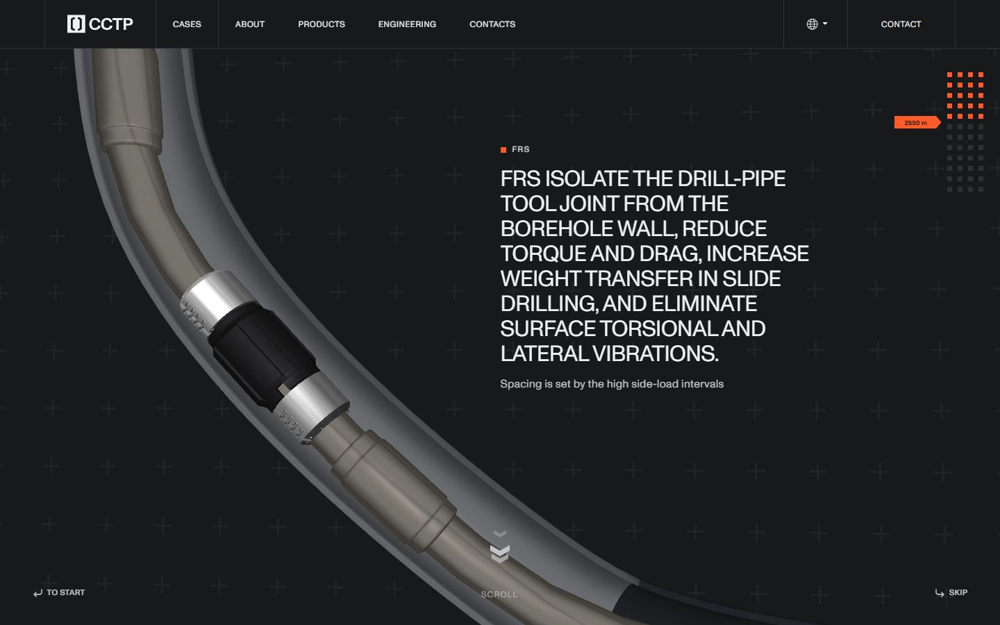
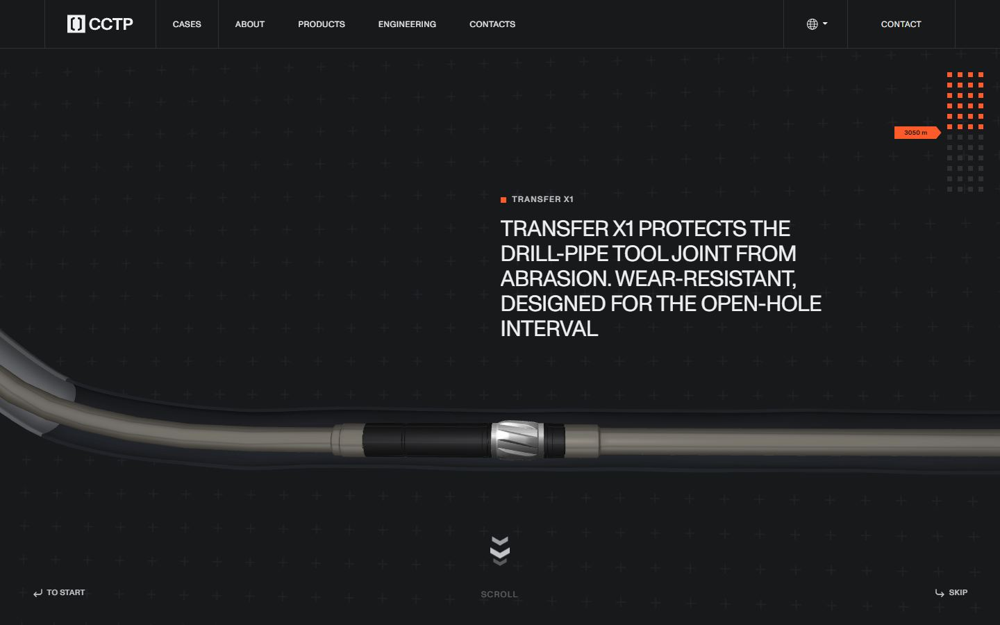
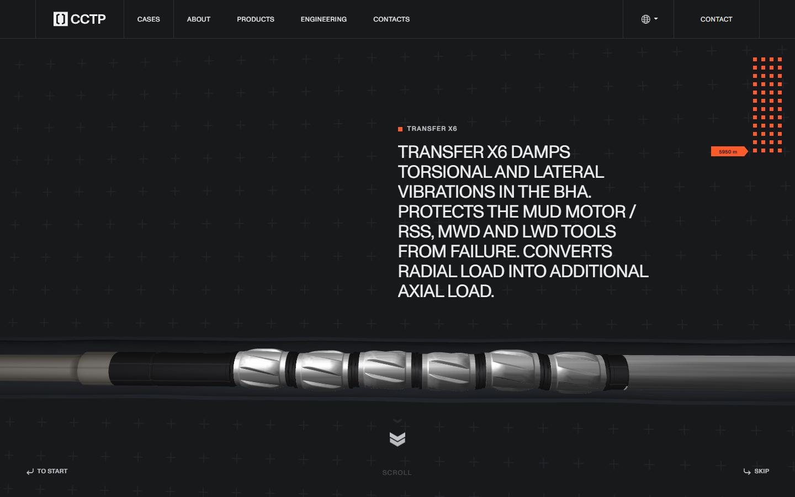
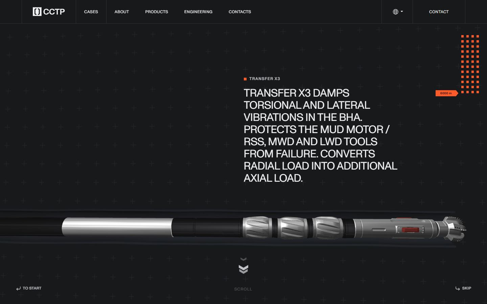
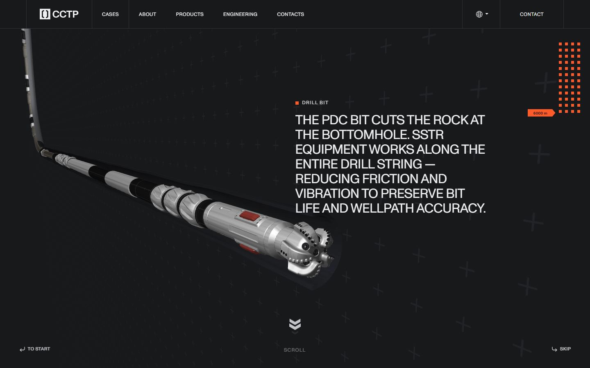
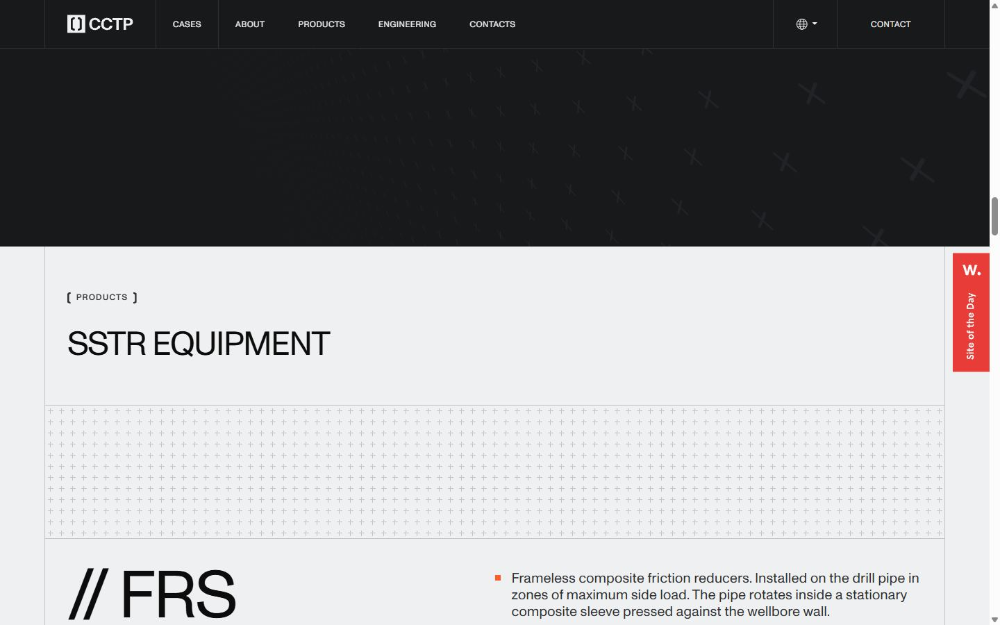
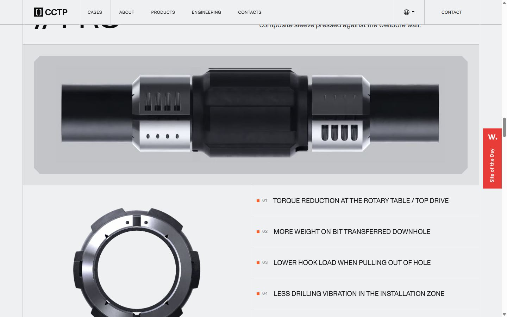
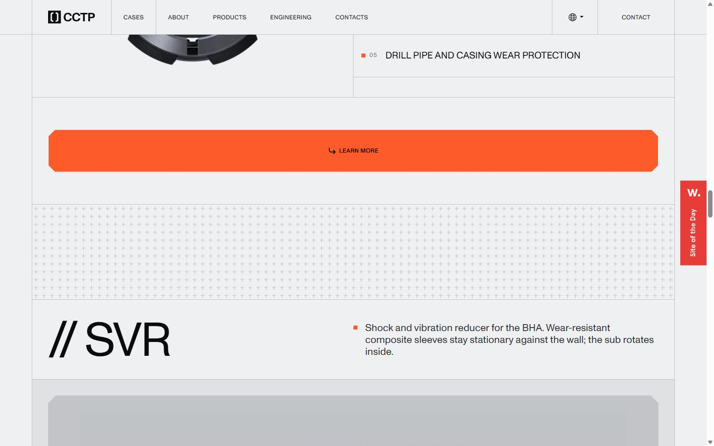
Pages internes
Mobile
Stack détectée
Astro, Barba.js, GSAP, Lenis, Lil-GUI/Tweakpane (debug), ScrollTrigger, SplitText/SplitType, Three.js, Virtual scroll, WebGL
Versions : GSAP 3.15.0 · Three.js r?
Shaders GLSL personnalisés extraits : 6 (voir shaders.glsl)
Design tokens
Couleurs (fonds, pondérées par surface)
#eff0f1 · #18191b · #c3c4c8 · #2f3032 · #e0e1e3 · #000000 · #fe5b2a · #201d1d
Couleurs de texte
#2f3032 · #0c0c0c · #eff0f1 · #c3c4c8 · #747576 · #333333 · #a3a3a4 · #ffffff
Polices utilisées (par volume de texte)
ABC Monument Grotesk · Arial · Abc Monument Grotesk
Fichiers de police chargés
Typographie
| Élément | Police | Taille | Graisse | Interligne | Interlettrage | Casse |
|---|---|---|---|---|---|---|
| h1 | "ABC Monument Grotesk", Arial, sans-serif | 48px | 400 | 49.008px | -1.68px | uppercase |
| h2 | "ABC Monument Grotesk", Arial, sans-serif | 48px | 400 | 49.008px | -1.68px | uppercase |
| h3 | "ABC Monument Grotesk", Arial, sans-serif | 24px | 400 | 28.008px | -0.48px | uppercase |
| h4 | "ABC Monument Grotesk", Arial, sans-serif | 19.2px | 400 | 23.04px | normal | uppercase |
| p | "ABC Monument Grotesk", Arial, sans-serif | 16px | 400 | 20px | 0.16px | none |
| a | "Abc Monument Grotesk", Arial, sans-serif | 12px | 400 | 20px | 0.48px | uppercase |
| li | Arial, "Helvetica Neue", Helvetica, sans-serif | 16px | 400 | 20px | normal | none |
| body | Arial, "Helvetica Neue", Helvetica, sans-serif | 16px | 400 | 20px | normal | none |
Échelle des tailles de texte
12px (93) · 32px (50) · 14px (43) · 16px (26) · 19.2px (17) · 96px (15) · 24px (11) · 48px (10) · 20px (5) · 11.4px (4) · 40px (2) · 80px (1) · 9px (1)
Arrondis
12px · 1600px
Transitions CSS fréquentes
Points de rupture (media queries)
991px · 767px · 480px · 479px · 992px
Animations CSS (@keyframes)
cctpPreloaderBlink, cctpRevealFallback, scrollHintMove, scrollHintPulse
Variables CSS (:root)
--brand-orange-50: #ffefea; --brand-orange-100: #ffccbd; --brand-orange-200: #ffb49d; --brand-orange-300: #fe9170; --brand-orange-400: #fe7c55; --brand-orange-500: #fe5b2a; --brand-orange-600: #e75326; --brand-orange-700: #b4411e; --brand-orange-800: #8c3217; --brand-orange-900: #6b2612; --brand-grey-100: #eff0f1; --brand-grey-150: #e0e1e3; --brand-grey-200: #c3c4c8; --brand-grey-250: #b5b5b5; --brand-grey-300: #a3a3a4; --brand-grey-400: #8b8c8d; --brand-grey-500: #747576; --brand-grey-600: #464749; --brand-grey-700: #2f3032; --brand-grey-750: #222326; --brand-grey-800: #18191b; --brand-grey-850: #141415; --brand-grey-900: #0c0c0c; --brand-grey-100-alpha: #eff0f11a; --brand-grey-900-alpha: #0c0c0c1a; --brand-scale-0: 0em; --brand-scale-25: 0.0625em; --brand-scale-50: 0.125em; --brand-scale-100: 0.25em; --brand-scale-200: 0.375em; --brand-scale-300: 0.5em; --brand-scale-400: 0.625em; --brand-scale-500: 0.75em; --brand-scale-600: 0.875em; --brand-scale-700: 0.9375em; --brand-scale-800: 1em; --brand-scale-900: 1.25em; --brand-scale-1000: 1.5em; --brand-scale-1100: 2em; --brand-scale-1200: 2.5em; --brand-scale-1300: 3em; --brand-scale-1400: 3.75em; --brand-scale-1500: 4.5em; --brand-font-family: "ABC Monument Grotesk", Arial, sans-serif; --brand-weight-light: 300; --brand-weight-regular: 400; --brand-weight-medium: 500; --brand-weight-bold: 700; --alias-brand-50: var(--brand-orange-50); --alias-brand-100: var(--brand-orange-100); --alias-brand-200: var(--brand-orange-200); --alias-brand-300: var(--brand-orange-300); --alias-brand-400: var(--brand-orange-400); --alias-brand-500: var(--brand-orange-500); --alias-brand-600: var(--brand-orange-600); --alias-brand-700: var(--brand-orange-700); --alias-brand-800: var(--brand-orange-800); --alias-brand-900: var(--brand-orange-900); --alias-grey-100: var(--brand-grey-100); --alias-grey-150: var(--brand-grey-150); --alias-grey-200: var(--brand-grey-200); --alias-grey-250: var(--brand-grey-250); --alias-grey-300: var(--brand-grey-300); --alias-grey-400: var(--brand-grey-400); --alias-grey-500: var(--brand-grey-500); --alias-grey-600: var(--brand-grey-600); --alias-grey-700: var(--brand-grey-700); --alias-grey-750: var(--brand-grey-750); --alias-grey-800: var(--brand-grey-800); --alias-grey-850: var(--brand-grey-850); --alias-grey-900: var(--brand-grey-900); --mapped-text-headings-inverse: var(--alias-grey-100); --mapped-text-body-light: var(--alias-grey-500); --mapped-text-body-inverse: var(--alias-grey-200); --mapped-text-on-action: var(--alias-grey-900); --mapped-text-action: var(--alias-brand-500); --mapped-text-action-hover: var(--alias-brand-600); --mapped-text-disabled: var(--alias-grey-500); --mapped-text-warning: var(--alias-brand-800); --mapped-text-error: #fe2a2a;
Structure de la home
Hauteur : 13934 px — 1220 nœuds DOM — canvas 1, vidéos 3, images 49
| # | Bloc | Hauteur | Titre | Médias |
|---|---|---|---|---|
| 1 | section .section_hero | 900 | Pushing the limits of drilling | 1 |
| 2 | section .section_about | 814 | From well data to verified field results — one engineering loop. | 13 |
| 3 | section .section_numbers | 1620 | Results, proven on real projects | 0 |
| 4 | section .section_process-intro | 345 | Friction reduction while drilling. Proven by data. | 1 |
| 5 | section .section_webgl | 900 | Friction and vibration act in different zones — the solution has to work in ever | 1 |
| 6 | section .section_products | 4862 | SSTR equipment | 6 |
| 7 | section .section_cases | 1537 | Case studies | 4 |
| 8 | section .section_proof is-padding-btm | 681 | Trusted by | 6 |
| 9 | section .section_globe | 831 | Hor 90° · Western Siberia | 10 |
| 10 | section .section_cta is-border-btm | 981 | Run the numbers on your well | 1 |
| 11 | footer .footer-wrap | 463 | 1 |
Navigation : Cases · About · Products · Engineering · Contacts · RU · EN · contact · Home · Cases · About · Products · Engineering · Contacts
Boutons / CTA :
SEO
Plan des titres
Performance (mesure locale, Chrome headless, connexion non bridée)
Mobile
Fichiers
captures/ : arrivée, scroll desktop (1440×900), pleine page, pages internes, mobile (390×844 @2x) ; vidéo de scroll dans la release GitHub « videos » (lien en haut de fiche)page.html : DOM rendu · styles.css : CSS chargé · scripts/ : JS chargé (index dans _index.json) · shaders.glsl : shaders extraits · rea-bundle.json : analyse REA du bundle (chunks, routes, endpoints)